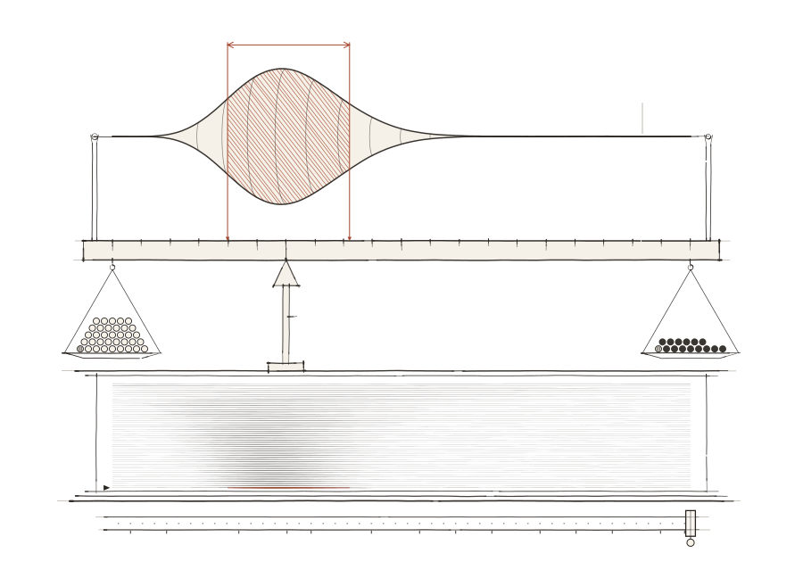

Vaarun
Muthappan
I'm a data scientist at Paramount, working on Bayesian statistics. This site collects my notes and projects in statistics, machine learning, and data science.
Bayesian updating on synthetic data
After all 48 observations (14 yes, 34 no), a flat prior gives the posterior Beta(15, 35), mean 0.30.

- Seen
- 48 / 48
- Yes / no
- 14 / 34
- Posterior
- Beta(15, 35)
- Mean
- 0.300
- 90% credible interval
- 0.20 – 0.41
My previous coursework includes Machine Learning in Finance, Reinforcement Learning, Causal Inference, Computer Vision, Big Data and Databases.
My background is in data science: I studied at the University of Michigan (bachelors, with a minor in Business) and at NYU (Masters).